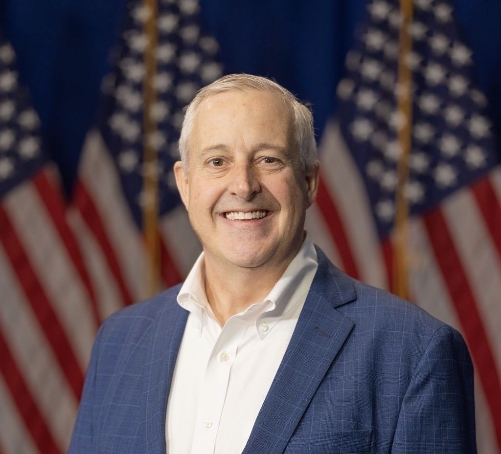

Endorsed by President Trump and the U.S. Chamber of Commerce, Whatley plans to cut taxes and regulations in order to stimulate North Carolina's economy. Advocating for a "North Carolina-first trade policy", he supports tariffs as a way of helping manufacturers, small business, and farmers within the state. He has spoken about the need to build an educated, skilled workforce. Whatley also wants to expand domestic oil production.
Whatley has enthusiastically supported Trump's policies to restrict illegal immigration and secure the southern border. If elected, he has said that he will maintain Trump's policies and transform them into laws so that future presidents could not reverse them. Whatley has also objected to Governor Cooper's refusal to have North Carolina sheriffs participate with Immigration Customs Enforcement (ICE).
Whatley has criticized his opponent, Governor Roy Cooper's, handling of Hurricane Helene relief. When the hurricane hit western North Carolina in September 2024, Whatley was the chairman of the Republican National Committee and President Trump later recruited him to help with recovery efforts in the region. He has said that he helped $11 billion in federal aid and that local governments need to be better prepared for storm recovery relief efforts in the future.
Endorsed by the North Carolina Troopers Association, Whatley has spoken about the need for policies that will hire more police officers and "put dangerous criminals behind bars." He blamed Governor Cooper's policies for the death of Ukrainian refugee Iryna Zarutska, who was fatally stabbed on Charlotte Light Rail in 2025. He claimed that the man charged with her killing was among a group of prisoners granted early release due to a pandemic-era civil rights settlement. Whatley has spoken about enacting a federal version of "Iryna's Law", which limits pretrial release for violent offenders.